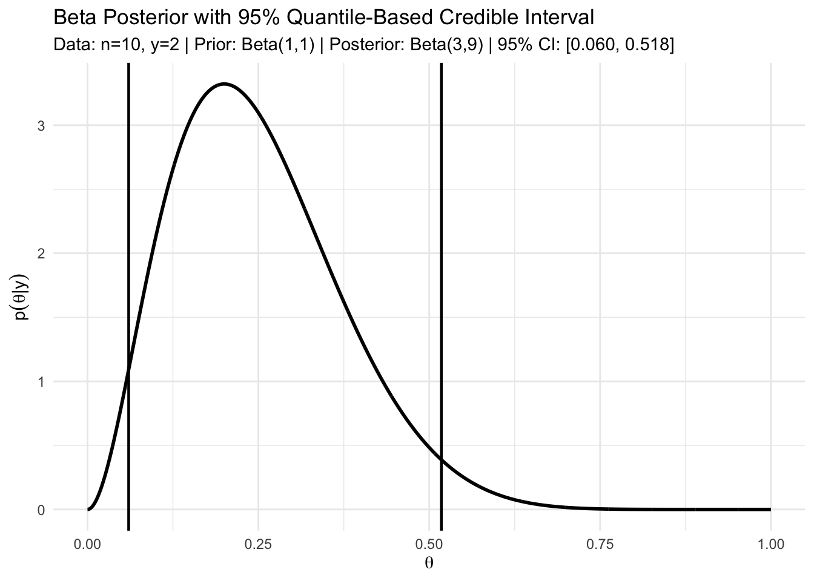

3 Bayesian Inference for single parameter models
Leading objectives:
Understand how to perform Bayesian inference on a single parameter model.
- Binomial model with given n
- Poission model
- Exponential family
Recall the important ingredients of Bayesian inference:
- Prior distribution: \(\pi(\theta)\)
- Likelihood function: \(p(y \mid \theta)\)
- Posterior distribution: \(p(\theta \mid y) \propto p(y \mid \theta) \pi(\theta)\)
3.1 Three basic ingredients of Bayesian inference
3.1.1 Prior
The prior distribution encodes our beliefs about the parameter \(\theta\) before conduct any experiments.
NotePrior and Data are independent
Note that, the prior distribution is independent of the data. It represents our knowledge or beliefs about the parameter before seeing the data.
How do we choose a prior?
- Informative priors: Based on previous studies or expert knowledge
- Weakly informative priors: Provide some regularization without dominating the data
- Non-informative priors: Attempt to be “objective” (e.g., uniform, Jeffreys prior)
3.1.2 Likelihood
The likelihood function represents the probability of observing the data given the parameter \(\theta\). It can be derived from the assumed statistical model for the data or experiment, i.e., \(y \sim p(y \mid \theta)\), or we can estimate this non-parametrically (i.e., without assuming the underlying distribution is the one we know.).
NoteLikelihood is NOT a probability distribution for \(\theta\)
Note that, the likelihood function is not a probability distribution for \(\theta\) itself. It is a function of \(\theta\) for fixed data \(y\).
3.1.3 Posterior
The posterior distribution combines the prior and likelihood to update our beliefs about \(\theta\) after observing the data. It is given by Bayes’ theorem: \[ p(\theta \mid y) = \frac{p(y \mid \theta) \pi(\theta)}{p(y)}, \] where \(p(y) = \int p(y \mid \theta) \pi(\theta) d\theta\) is the marginal likelihood or evidence.
3.1.4 An simple example
Examples:
- Beta prior + Binomial likelihood → Beta posterior
- Normal prior + Normal likelihood (known variance) → Normal posterior
- Gamma prior + Poisson likelihood → Gamma posterior
Advantages: - Analytical posteriors (no numerical integration needed) - Interpretable parameters - Computationally efficient
Limitations:
- May not reflect true prior beliefs
- Modern computing makes non-conjugate priors feasible
Let’s look a simple example to illustrate the convenience of conjugate priors. Consider a Binomial model with unknown success probability \(\theta\) and known number of trials \(n\). We can use a Beta prior for \(\theta\).
Suppose we have a Binomial model with known number of trials \(n\) and unknown success probability \(\theta\). We can use a Beta prior for \(\theta\).
- Prior: \(\theta \sim \text{Beta}(\alpha, \beta)\)
- Likelihood: \(y \mid \theta \sim \text{Binomial}(n, \theta)\)
The derivation of the posterior is as follows:
\[ \begin{aligned} p(y \mid \theta) & = \binom{n}{y} \theta^y (1 - \theta)^{n - y}, \\ \pi(\theta) & = \frac{\theta^{\alpha - 1} (1 - \theta)^{\beta - 1}}{B(\alpha, \beta)}, \end{aligned} \] where \(B(\alpha, \beta)\) is the Beta function. Then the posterior is proportional to: \[ p(\theta \mid y) \propto p(y \mid \theta) \pi(\theta) \propto \theta^{y + \alpha - 1} (1 - \theta)^{n - y + \beta - 1}. \] This is the kernel of a Beta distribution with parameters \((\alpha + y, \beta + n - y)\). Thus, the posterior distribution is: \[ \theta \mid y \sim \text{Beta}(\alpha + y, \beta + n - y). \]
Thus, the Posterior is \(\theta \mid y \sim \text{Beta}(\alpha + y, \beta + n - y)\).
3.2 Happiness Data – the first example of Bayesian inference procedure
We study Bayesian inference for a binomial proportion \(\theta\) when the sample size \(n\) is fixed. In this example, we want to see what is the procedure of doing Bayesian inference
In the 1998 General Social Survey, each female respondent aged 65 or over was asked whether she was generally happy.
Define the response variable \[ Y_i = \begin{cases} 1, & \text{if respondent } i \text{ reports being generally happy},\\ 0, & \text{otherwise}, \end{cases} \qquad i = 1,\ldots,n, \] where \(n = 129\).
Because we lack information that distinguishes individuals, it is reasonable to treat the responses as exchangeable.
That is, before observing the data, the labels or ordering of respondents carry no information.
Since the sample size \(n\) is small relative to the population size \(N\) of senior women, results from the previous chapter justify the following modeling approximation.
Modeling Assumptions: Our beliefs about \((Y_1,\ldots,Y_{129})\) are described by:
An unknown population proportion \[ \theta = \frac{1}{N}\sum_{i=1}^N Y_i, \] where \(\theta\) represents the proportion of generally happy individuals in the population.
A sampling model given \(\theta\)
Conditional on \(\theta\), the responses \(Y_1,\ldots,Y_{129}\) are independent and identically distributed Bernoulli random variables with \[ \Pr(Y_i = 1 \mid \theta) = \theta. \]
Given the population proportion \(\theta\), each respondent independently reports being happy with probability \(\theta\).
Likelihood: Under this model, the probability of observing data \(\{y_1,\ldots,y_{129}\}\) given \(\theta\) is \[ p(y_1,\ldots,y_{129} \mid \theta) = \theta^{\sum_{i=1}^{129} y_i} (1-\theta)^{129-\sum_{i=1}^{129} y_i}. \]
This expression depends on the data only through the sufficient statistic \[ S = \sum_{i=1}^{129} Y_i, \] the total number of respondents who report being generally happy.
For the happiness data, \[ S = 118, \] so the likelihood simplifies to \[ p(y_1,\ldots,y_{129} \mid \theta) = \theta^{118}(1-\theta)^{11}. \]
Q: Which prior to be used?
A prior distribution is conjugate to a likelihood if the posterior distribution belongs to the same family as the prior. For the binomial likelihood, the Beta distribution is conjugate. But we have another choice of prior, to use non-informative prior.
A Uniform Prior Distribution: Suppose our prior information about \(\theta\) is very weak, in the sense that all subintervals of \([0,1]\) with equal length are equally plausible.
Symbolically, for any \(0 \le a < b < b+c \le 1\), \[
\Pr(a \le \theta \le b)
=
\Pr(a+c \le \theta \le b+c).
\]
This implies a uniform prior: \[ \pi(\theta) = 1, \qquad 0 \le \theta \le 1. \]
Posterior Distribution: Bayes’ rule gives \[ p(\theta \mid y_1,\ldots,y_{129}) = \frac{p(y_1,\ldots,y_{129} \mid \theta)\,\pi(\theta)} {p(y_1,\ldots,y_{129})}. \]
With a uniform prior, this reduces to \[ p(\theta \mid y_1,\ldots,y_{129}) \propto \theta^{118}(1-\theta)^{11}. \]
Key idea: with a uniform prior, the posterior has the same shape as the likelihood.
To obtain a proper probability distribution, we must normalize.
Normalizing Constant and the Beta Distribution: Using the identity \[ \int_0^1 \theta^{a-1}(1-\theta)^{b-1}\,d\theta = \frac{\Gamma(a)\Gamma(b)}{\Gamma(a+b)}, \] we find \[ p(y_1,\ldots,y_{129}) = \frac{\Gamma(119)\Gamma(12)}{\Gamma(131)}. \]
Therefore, the posterior density is \[ p(\theta \mid y_1,\ldots,y_{129}) = \frac{\Gamma(131)}{\Gamma(119)\Gamma(12)} \theta^{119-1}(1-\theta)^{12-1}. \]
That is, \[ \theta \mid y \sim \mathrm{Beta}(119,\,12). \]
Recall that, a random variable \(\theta \sim \mathrm{Beta}(a,b)\) distribution if \[ \pi(\theta) = \frac{\Gamma(a+b)}{\Gamma(a)\Gamma(b)} \theta^{a-1}(1-\theta)^{b-1}. \]
For \(\theta \sim \mathrm{Beta}(a,b)\), the expectation (i.e., mean or the first moment) is \(\mathbb{E}(\theta) = \frac{a}{a+b}\), and the variance is \(\mathrm{Var}(\theta)=\frac{ab}{(a+b)^2(a+b+1)}.\)
In our example, the happiness data, the posterior distribution is \[ \theta \mid y \sim \mathrm{Beta}(119,12). \]
Thus, the posterior mean is \(\mathbb{E}(\theta \mid y) = 0.915\), and the posterior standard deviation is \(\mathrm{sd}(\theta \mid y) = 0.025\).
These summaries quantify both our best estimate of the population proportion and our remaining uncertainty after observing the data.
3.2.1 Inference about exchangeable binary data
Posterior Inference under a Uniform Prior
Suppose \(Y_1, \ldots, Y_n \mid \theta \stackrel{\text{i.i.d.}}{\sim} \text{Bernoulli}(\theta)\), and we place a uniform prior on \(\theta\). The posterior distribution of \(\theta\) given the observed data \(y_1, \ldots, y_n\) is proportional to \[ \begin{aligned} p(\theta \mid y_1, \ldots, y_n) &= \frac{p(y_1, \ldots, y_n \mid \theta) \pi(\theta)}{p(y_1, \ldots, y_n)} \\ &= \theta^{\sum_i y_i}(1 - \theta)^{n - \sum_i y_i} \times \frac{\pi(\theta)}{p(y_1, \ldots, y_n)}\\ &\propto \theta^{\sum_i y_i}(1 - \theta)^{n - \sum_i y_i}. \end{aligned} \]
Consider two parameter values \(\theta_a\) and \(\theta_b\). The ratio of their posterior densities is \[ \begin{aligned} \frac{p(\theta_a \mid y_1, \ldots, y_n)} {p(\theta_b \mid y_1, \ldots, y_n)} &=\frac{\theta_a^{\sum y_i}\left(1-\theta_a\right)^{n-\sum y_i} \times p\left(\theta_a\right) / p\left(y_1, \ldots, y_n\right)}{\theta_b^{\sum y_i}\left(1-\theta_b\right)^{n-\sum y_i} \times p\left(\theta_b\right) / p\left(y_1, \ldots, y_n\right)} \\ &= \left(\frac{\theta_a}{\theta_b}\right)^{\sum_i y_i} \left(\frac{1 - \theta_a}{1 - \theta_b}\right)^{n - \sum_i y_i} \frac{p(\theta_a)}{p(\theta_b)}. \end{aligned} \]
This expression shows that the data affect the posterior distribution only through the sum of the data \(\sum_{i=1}^n y_i\) based on the relative probability density at \(\theta_a\) to \(\theta_b\).
As a result, for any set \(A\), one can show that \[ \Pr(\theta \in A \mid Y_1 = y_1, \ldots, Y_n = y_n) = \Pr\left(\theta \in A \mid \sum_{i=1}^n Y_i = \sum_{i=1}^n y_i\right). \]
This means that \(\sum_{i=1}^n Y_i\) contains all the information in the data relevant for inference about \(\theta\). We therefore say that \(Y = \sum_{i=1}^n Y_i\) is a sufficient statistic for \(\theta\). The term sufficient is used because knowing \(\sum_{i=1}^n Y_i\) is sufficient to carry out inference about \(\theta\); no additional information from the individual observations \(Y_1, \ldots, Y_n\) is required.
In the case where \(Y_1, \ldots, Y_n \mid \theta\) are i.i.d. Bernoulli\((\theta)\) random variables, the sufficient statistic \(Y = \sum_{i=1}^n Y_i\) follows a binomial distribution with parameters \((n, \theta)\).
The Binomial Model
Because each \(Y_i\) is Bernoulli\((\theta)\) and the observations are independent, the sufficient statistic \(Y = \sum_{i=1}^n Y_i\) follows a binomial distribution with parameters \((n, \theta)\).
That is, \(\Pr(Y = y \mid \theta)=\binom{n}{y} \theta^y (1 - \theta)^{n - y}\), \(y = 0, 1, \ldots, n\). For a binomial\((n, \theta)\) random variable \(Y\),
- \(\mathbb{E}[Y \mid \theta] = n\theta\),
- \(\mathrm{Var}(Y \mid \theta) = n\theta(1 - \theta).\)
Posterior inference under a uniform prior distribution
Having observed \(Y = y\) our task is to obtain the posterior distribution of \(\theta\). By Bayes’ theorem, \[ p(\theta \mid y) = \frac{p(y \mid \theta),\pi(\theta)}{p(y)}. \]
For a binomial model with \(Y \sim \text{Binomial}(n,\theta)\), the likelihood is \[ p(y \mid \theta) = \binom{n}{y}\theta^y(1-\theta)^{n-y}. \]
Therefore, \[ p(\theta \mid y) = \frac{\binom{n}{y} \theta^y(1-\theta)^{n-y}\pi(\theta)}{p(y)} = c(y) \theta^y(1-\theta)^{n-y}\pi(\theta), \] where \(c(y)\) is a normalizing constant that depends only on \(y\), not on \(\theta\). When using the uniform distribution, \(\pi(\theta)\), we can calculate \(c(y)\) easily as \[ \begin{aligned} 1&=\int_0^1 c(y) \theta^y(1-\theta)^{n-y} d \theta \\ &=c(y) \int_0^1 \theta^y(1-\theta)^{n-y} d \theta \\ &=c(y) \frac{\Gamma(y+1) \Gamma(n-y+1)}{\Gamma(n+2)} \end{aligned}. \] Hence, \(c(y)=\Gamma(n+2)/\{\Gamma(y+1) \Gamma(n-y+1)\}\), and the posterior distribution is \[ \begin{aligned} p(\theta \mid y) & =\frac{\Gamma(n+2)}{\Gamma(y+1) \Gamma(n-y+1)} \theta^y(1-\theta)^{n-y} \\ & =\frac{\Gamma(n+2)}{\Gamma(y+1) \Gamma(n-y+1)} \theta^{(y+1)-1}(1-\theta)^{(n-y+1)-1}, \end{aligned} \] Which is exactly the \(\operatorname{beta}(y+1, n-y+1)\). In the happiness example, we have \(n=129\) and \(Y=\sum Y_i=118\), so the posterior distribution is \(\operatorname{beta}(119,12)\), written as \[ n=129, Y \equiv \sum Y_i=118 \quad \Rightarrow \quad \theta \mid\{Y=118\} \sim \operatorname{beta}(119,12) . \]
This confirms the sufficiency result for this model and prior distribution, by showing that if \(\sum y_i = y = 118\), \(p(\theta\mid y_1,\dots y_n) = p(\theta\mid y) = \mathrm{beta}(119, 12)\). That is, the information contained in \(\{Y_1 = y_1, \dots, Y_n = y_n\}\) is the same as the information contained in \(\{Y = y\}\), where \(Y = \sum Y_i\) and \(y = \sum y_i\). This show the posterior when we use uniform prior. One may ask, what if we use a different prior?
Posterior distributions under beta prior distributions
The uniform prior distribution has \(\pi(\theta) = 1\) for all \(\theta\in [0,1]\). This distribution can be thought of as a beta prior distribution with parameters \(a = 1, b = 1\) \[ \pi(\theta)=\frac{\Gamma(2)}{\Gamma(1) \Gamma(1)} \theta^{1-1}(1-\theta)^{1-1}=\frac{1}{1 \times 1} 1 \times 1=1 \] for all \(\theta \in[0,1]\).
The gamma function is defined as \[ \Gamma(x)=\int_0^{\infty} t^{x-1} e^{-t} d t, \quad x>0. \]
It satisfies the following properties:
- \(\Gamma(n)=(n-1)!\) for any positive integer \(n\).
- \(\Gamma(x+1)=x \Gamma(x)\) for any \(x>0\).
- \(\Gamma(1 / 2)=\sqrt{\pi}\).
- \(\Gamma(1)=1\) by convention.
Now, from the previous part, recall that we have, \[ \text { if }\left\{\begin{array}{c} \theta \sim \operatorname{beta}(1,1) \text { (uniform) } \\ Y \sim \operatorname{binomial}(n, \theta) \end{array}\right\}, \text { then }\{\theta \mid Y=y\} \sim \operatorname{beta}(1+y, 1+n-y). \]
To get the posterior distribution under a general beta prior distribution, we just need to add the number of 1’s to the \(\alpha\) parameter and the number of 0’s to the \(\beta\) parameter. To see this, assume \(\theta\sim \operatorname{beta}(\alpha, \beta)\), and \(Y\mid \theta \sim \operatorname{binomial}(n, \theta)\). Then, once we observed \(\{Y=y\}\), by Bayes’ theorem, the posterior distribution is \[ \begin{aligned} p(\theta \mid y) & =\frac{\pi(\theta) p(y \mid \theta)}{p(y)} \\ & =\frac{1}{p(y)} \times \frac{\Gamma(a+b)}{\Gamma(a) \Gamma(b)} \theta^{a-1}(1-\theta)^{b-1} \times\binom{ n}{y} \theta^y(1-\theta)^{n-y} \\ & =c(n, y, a, b) \times \theta^{a+y-1}(1-\theta)^{b+n-y-1} \\ &\propto \beta(a+y, b+n-y) . \end{aligned} \]
NoteOne-to-one correspondence between the distribution
Note that, there is a one-to-one correspondence between the prior distribution parameters and the posterior distribution parameters. Two distributions are said to be the same if
- Their CDFs are the same.
- Their PDFs are the same.
- All of their moments are the same. This implies that they are equal if and only if the moment generating function or the probability generating functions are the same.
We have seen the beta-binomial example twice, which is an example of conjugate prior, let’s definite this formally,
A class \(\mathcal{P}\) of prior distribution for \(\theta\) is said conjugate for the likelihood function \(p(y \mid \theta)\) if for every prior distribution \(\pi(\theta) \in \mathcal{P}\), the corresponding posterior distribution \(p(\theta \mid y)\) is also in \(\mathcal{P}\), that is \[ \pi(\theta) \in \mathcal{P} \Rightarrow p(\theta \mid y) \in \mathcal{P}. \]
Note
Conjugate priors simplify posterior calculations, but they may not accurately reflect genuine prior beliefs. Still, mixtures of conjugate priors offer substantially greater flexibility while remaining computationally tractable.
If the likelihood \(\theta \mid \{Y = y\} \sim beta(a + y, b + n − y)\), recall that
- \(\mathrm{E}[\theta \mid y]=\frac{a+y}{a+b+n}\)
- \(\operatorname{mode}[\theta \mid y]=\frac{a+y-1}{a+b+n-2}\)
- \(\operatorname{Var}[\theta \mid y]=\frac{\mathrm{E}[\theta \mid y] \mathrm{E}[1-\theta \mid y]}{a+b+n+1}\)
The posterior mean can be expressed as a weighted average of the prior mean and the maximum likelihood estimate (MLE) of \(\theta\): \[ \begin{aligned} \mathrm{E}[\theta \mid y] & =\frac{a+y}{a+b+n} \\ & =\frac{a+b}{a+b+n} \times\frac{a}{a+b}+\frac{n}{a+b+n}\times \frac{y}{n} \\ & =\frac{a+b}{a+b+n} \times \text { prior expectation }+\frac{n}{a+b+n} \times \text { data mean } \end{aligned} \] For this model and prior distribution, the posterior expectation (also known as the posterior mean) can be expressed as a weighted average of the prior expectation and the sample mean. The weights are proportional to the prior sample size a + b and the observed sample size n, respectively. This representation leads to a natural interpretation of the Beta prior parameters as prior data:
- \(a \approx \text{``prior \# of 1’s,''}\)
- \(b \approx \text{``prior \# of 0’s,''}\)
- \(a + b \approx \text{``prior sample size.''}\)
When \(n \gg a+b\), it is reasonable to expect that most of the information about \(\theta\) should come from the data rather than from the prior distribution. This intuition is confirmed mathematically. In particular, when \(n \gg a + b\),
- \(\frac{a + b}{a + b + n} \approx 0\),
- \(\mathbb{E}[\theta \mid y] \approx \frac{y}{n}\),
- \(\mathrm{Var}(\theta \mid y) \approx \frac{1}{n}\,\frac{y}{n}\left(1 - \frac{y}{n}\right)\).
Thus, in large samples, the posterior mean approaches the sample proportion and the posterior variance shrinks at rate \(1/n\), reflecting increasing information from the data.

Prediction
An important feature of Bayesian inference is the existence of a predictive distribution for new observations.
The posterior predictive distribution for a new observation \(Y_{\text{new}}\) given the observed data \(y\) is obtained by integrating over the posterior distribution of \(\theta\).
Returning to our notation for binary data, let \(y_1, \ldots, y_n\) be the observed outcomes from a sample of \(n\) binary rvs, and let \(\tilde Y \in \{0,1\}\) denote a future observation from the same population that has not yet been observed. The predictive distribution of \(\tilde Y\) is defined as the conditional distribution of \(\tilde Y\) given the observed data \(\{Y_1=y_1,\ldots,Y_n=y_n\}\). For conditionally i.i.d. binary observations, the predictive distribution can be derived by integrating out the unknown parameter \(\theta\): \[ \begin{aligned} \operatorname{Pr}\left(\tilde{Y}=1 \mid y_1, \ldots, y_n\right) & =\int \operatorname{Pr}\left(\tilde{Y}=1, \theta \mid y_1, \ldots, y_n\right) d \theta \\ & =\int \operatorname{Pr}\left(\tilde{Y}=1 \mid \theta, y_1, \ldots, y_n\right) p\left(\theta \mid y_1, \ldots, y_n\right) d \theta \\ & =\int p\left(\theta \mid y_1, \ldots, y_n\right) \theta d \theta \\ & =\mathrm{E}\left[\theta \mid y_1, \ldots, y_n\right]\\ &=\frac{a+\sum_{i=1}^n y_i}{a+b+n}. \end{aligned} \]
Hence, we also have, \[ \operatorname{Pr}\left(\tilde{Y}=0 \mid y_1, \ldots, y_n\right) =1-\mathrm{E}\left[\theta \mid y_1, \ldots, y_n\right]=\frac{b+\sum_{i=1}^n\left(1-y_i\right)}{a+b+n} . \]
NoteProperties of the predictive distribution
It does not depend on any unknown quantities. If it did, it could not be used to make predictions.
It depends on the observed data. In particular, \(\tilde Y\) is not independent of \(Y_1,\ldots,Y_n\), because the observed data provide information about \(\theta\), which in turn influences \(\tilde Y\). If \(\tilde Y\) were independent of the observed data, learning from data would be impossible.
The uniform prior distribution on [0,1], also known as the (1,1) prior, can be interpreted as containing the same information as a hypothetical prior dataset consisting of one success (“1”) and one failure (“0”).
Under this prior, the posterior predictive probability of a future success is \[ \Pr(\tilde Y = 1 \mid Y = y) = \mathbb{E}[\theta \mid Y = y] = \frac{2}{2+n}\cdot\frac{1}{2} + \frac{n}{2+n}\cdot\frac{y}{n}. \]
This expression highlights that the predictive probability is a weighted average of:
- the prior mean \(1/2\), and
- the sample proportion \(y/n\),
with weights proportional to the prior sample size 2 and the observed sample size n, respectively.
The posterior mode under this prior is \[ \text{mode}(\theta \mid Y = y) = \frac{y}{n}, \] where \[ Y = \sum_{i=1}^n Y_i. \]
At first glance, the discrepancy between these two posterior summaries may seem surprising. However, it reflects the fact that different summaries capture different features of the posterior distribution.
To see this clearly, consider the case \(Y = 0\). In this case, \[ \text{mode}(\theta \mid Y = 0) = 0, \] but the predictive probability remains \[ \Pr(\tilde Y = 1 \mid Y = 0) = \frac{1}{2+n}. \]
Thus, even when no successes have been observed, the Bayesian predictive distribution assigns a positive probability to a future success due to the prior information. This illustrates how Bayesian prediction naturally balances prior beliefs with observed data.
3.2.2 Confidence Regions: Bayesian v.s. Frequentist
If it often desirable to identify the regions of the parameter space that are likely to contain the true value of the parameter. To do this, after observing the data \(Y=y\), we can construct an interval \([\ell(y),u(y)]\) that is likely to contain the true value of \(\theta\), i.e., the probability that \(\ell(y)<\theta<u(y)\) is large. There are two different ways to interpret this probability, leading to the concepts of Bayesian coverage and frequentist coverage.
An interval \([\ell(y), u(y)]\), based on the observed data \(Y = y\), has 100(1-\(\alpha\))% Bayesian coverage for \(\theta\) if \[ \Pr(\ell(y) < \theta < u(y)\mid Y = y) = 1-\alpha. \]
A random interval \([\ell(Y ), u(Y )]\) has 100(1-\(\alpha\))% frequentist coverage for \(\theta\) if, before the data are gathered, \[ \Pr(\ell(Y ) < \theta < u(Y )\mid\theta) = 1-\alpha. \]
Note
In a sense, the frequentist and Bayesian notions of coverage describe pre experimental and post experimental perspectives, respectively.
3.3 Frequentist vs Bayesian Coverage
You may recall an important point often emphasized in introductory statistics courses. Suppose we observe data \(Y=y\) and compute a frequentist confidence interval \[
[l(y),\,u(y)].
\] Once the data are observed, the parameter \(\theta\) is treated as fixed, not random.
Therefore, \[
\Pr\!\bigl(l(y) < \theta < u(y) \mid \theta\bigr)
=
\begin{cases}
1, & \text{if } \theta \in [l(y),u(y)],\\
0, & \text{if } \theta \notin [l(y),u(y)].
\end{cases}
\]
This highlights a key limitation of frequentist confidence intervals:
They do not admit a post-experimental probability interpretation.
After observing the data, it is not meaningful, from a frequentist perspective, to say that there is a 95% probability that \(\theta\) lies in the computed interval.
What Frequentist Coverage Means
Although this interpretation may feel unsatisfying, frequentist coverage is still useful in many situations. Imagine repeatedly running many independent experiments and constructing a confidence interval for each one.
If each interval procedure has 95% frequentist coverage, then:
About 95% of the intervals will contain the true parameter value.
This is a long-run, repeated-sampling interpretation, not a statement about any single observed interval.
Can Bayesian and Frequentist Coverage Agree?
A natural question is whether a confidence interval can simultaneously have:
- a Bayesian interpretation, i.e., a 100(1-\(\alpha\))% posterior probability that \(\theta\) lies in the interval, and
- approximately 100(1-\(\alpha\))% frequentist coverage.
Hartigan (1966) showed that, for the types of intervals considered in Hopf (2009), an interval that has 95% Bayesian coverage additionally has the property that \[ \Pr\!\bigl(l(Y) < \theta < u(Y) \mid \theta\bigr) = 0.95 + \varepsilon_n, \] where the error term satisfies \(|\varepsilon_n| < a/n\) for some constant \(a\). This result implies that, an interval with 95% Bayesian coverage, will also have approximately 95% frequentist coverage, at least asymptotically, as the sample size \(n\) grows.
In other words, under suitable conditions, Bayesian credible intervals and frequentist confidence intervals can agree in large samples, even though their interpretations are fundamentally different. Keep in mind that most non-Bayesian methods of constructing 100(1-\(\alpha\))% confidence intervals also only achieve their nominal coverage probability asymptotically.
NoteReminder
This reconciliation is important, but it should not obscure the conceptual distinction:
- frequentist coverage is a pre-experimental property of a procedure,
- Bayesian coverage is a post-experimental probability statement about \(\theta\) given the data.
Quantile-Based Credible Intervals
In fact, this is also true for most classical 95% confidence intervals.
For further discussion of the similarities between Bayesian and frequentist intervals, see Severini (1991) and Sweeting (2001).
3.4 Posterior Quantile Intervals
One of the simplest ways to construct a Bayesian credible interval is to use posterior quantiles. To form a \(100(1-\alpha)\%\) credible interval for \(\theta\), find numbers \(\theta_{\alpha/2} < \theta_{1-\alpha/2}\) such that
- \(\Pr(\theta < \theta_{\alpha/2} \mid Y=y) = \alpha/2,\)
- \(\Pr(\theta > \theta_{1-\alpha/2} \mid Y=y) = \alpha/2,\)
where \(\theta_{\alpha/2}\) and \(\theta_{1-\alpha/2}\) are the \(\alpha/2\) and \(1-\alpha/2\) posterior quantiles of \(\theta\). By construction, \[ \begin{aligned} \operatorname{Pr}\left(\theta \in\left[\theta_{\alpha / 2}, \theta_{1-\alpha / 2}\right] \mid Y=y\right) & =1-\operatorname{Pr}\left(\theta \notin\left[\theta_{\alpha / 2}, \theta_{1-\alpha / 2}\right] \mid Y=y\right) \\ & =1-\left[\operatorname{Pr}\left(\theta<\theta_{\alpha / 2} \mid Y=y\right)+\operatorname{Pr}\left(\theta>\theta_{1-\alpha / 2} \mid Y=y\right)\right] \\ & =1-\alpha . \end{aligned} \]
Suppose we observe \(n = 10\) conditionally independent Bernoulli trials and obtain \(Y = 2\) successes. Using a uniform prior for \(\theta\), \(\theta \sim \mathrm{Beta}(1,1),\) the posterior distribution is \[ \theta \mid \{Y=2\} \sim \mathrm{Beta}(1+2,\;1+8) = \mathrm{Beta}(3,9). \]
A 95% posterior confidence interval can be obtained from by 2.5% and 97.5% quantiles of this Beta distribution \([\theta_{0.025}, \theta_{0.975}]\). In this case, \[ \theta_{0.025} \approx 0.06, \qquad \theta_{0.975} \approx 0.52, \] so \[ \Pr(0.06 \le \theta \le 0.52 \mid Y=2) = 0.95. \]
This interval has a direct probabilistic interpretation: given the observed data, there is a 95% posterior probability that \(\theta\) lies in this range.
b <- a <- 1 # prior parameter
n <- 10 ; y <- 2 # data
qbeta(c(0.025, 0.975), a + y, b + n - y)[1] 0.06021773 0.51775585a_post <- a + y
b_post <- b + (n - y)
# 95% quantile-based credible interval
ci <- qbeta(c(0.025, 0.975), a_post, b_post)
ci_low <- ci[1]
ci_high <- ci[2]
# Grid for plotting posterior density
theta <- seq(0, 1, length.out = 2000)
df <- data.frame(theta = theta, density = dbeta(theta, a_post, b_post))
# Plot: posterior density curve + two vertical CI bars
ggplot(df, aes(x = theta, y = density)) +
geom_line(linewidth = 1) +
geom_vline(xintercept = ci_low, linewidth = 0.8) +
geom_vline(xintercept = ci_high, linewidth = 0.8) +
labs(
title = "Beta Posterior with 95% Quantile-Based Credible Interval",
subtitle = sprintf(
"Data: n=%d, y=%d | Prior: Beta(%d,%d) | Posterior: Beta(%d,%d) | 95%% CI: [%.3f, %.3f]",
n, y, a, b, a_post, b_post, ci_low, ci_high
),
x = expression(theta),
y = expression(p(theta * "|" * y))
) +
theme_minimal()
Highest posterior density (HPD) region
The Figure above illustrates the posterior distribution of \(\theta\) for the binomial example with a uniform prior, together with a 95% quantile-based credible interval. Notice an important feature of the plot:
There exist values of \(\theta\) outside the quantile-based interval that have higher posterior density than some values inside the interval.
This observation suggests that the quantile-based interval may not be the most efficient way to summarize posterior uncertainty. In particular, it motivates a more restrictive type of credible region that concentrates on the most plausible parameter values.
A \(100(1-\alpha)\%\) HPD region is a subset of the sample space, \(s(y) \subset \Theta\) such that:
- \(\Pr(\theta \in s(y) \mid Y = y) = 1 - \alpha\), and
- If \(\theta_a \in s(y)\) and \(\theta_b \notin s(y)\), then \(p(\theta_a \mid Y = y) \ge p(\theta_b \mid Y = y).\)
In words, an HPD region contains the parameter values with the largest posterior density, subject to containing probability mass \(1-\alpha\).
Observed that, all points inside an HPD region are at least as plausible as any point outside the region, according to the posterior distribution. This property distinguishes HPD regions from quantile-based intervals, which are defined purely by cumulative probability and may include low-density values while excluding higher-density ones.

An HPD region can be constructed conceptually as follows:
NoteAlgorithm to construct an HPD region
- Begin with a horizontal line above the posterior density curve.
- Gradually lower the line.
- At each height, include all values of \(\theta\) whose posterior density exceeds the line.
- Stop lowering the line once the total posterior probability of the included region reaches \(1-\alpha\).
This procedure guarantees that the retained region consists of the most probable values of \(\theta\).
HPD Regions and Multimodality
If the posterior density is unimodal, the HPD region will typically be a single interval. However, if the posterior density is multimodal (having multiple peaks), the HPD region need not be an interval; it may consist of several disjoint subsets of the parameter space.
In the binomial example with \(n=10\), \(Y=2\), and a uniform prior, the posterior distribution is \(\mathrm{Beta}(3,9)\).
For this posterior:
- The 95% quantile-based credible interval is approximately \([0.06,\,0.52]\).
- The 95% HPD region is approximately \([0.04,\,0.48]\).
The HPD region is narrower, and therefore more precise, than the quantile-based interval, while still containing 95% of the posterior probability.
Both intervals are valid Bayesian credible intervals, but they summarize posterior uncertainty in different ways.
3.5 The Poisson Model
Another commonly used distribution is the Poisson, in this case, the measurement are the integer numbers. Some examples include number of coin tosses, the number of friends they have, or the number of birthday celebrations have a person have. In these situations, the sample space is \(\mathcal{Y}=\{0,1,2,\ldots\}.\) There are other possible models for those situation, but perhaps the simplest probability model on \(\mathcal{Y}\) is the Poisson model.
Poisson distribution
Recall from the previous chapter, that a random variable \(Y\) has a Poisson distribution with mean \(\theta\) if \[ \Pr(Y=y\mid \theta)=\mathrm{dpois}(y,\theta)=\frac{\theta^y e^{-\theta}}{y!}, \qquad y\in\{0,1,2,\ldots\}. \]
For such a random variable, \[ \mathbb{E}(Y)=\theta \qquad \text{and} \qquad \mathrm{Var}(Y)=\theta. \]
People sometimes use the Poisson distribution to model count data because of its simplicity and its ability to model events that occur independently over a fixed interval of time or space. The Poisson distribution is particularly useful when the events being counted are rare or infrequent, and when the average rate of occurrence is known. Note that, in this model, the mean and the variance are the same, which is a property that can be useful in certain applications; One may call this property as “mean-variance relationship”.
library(ggplot2)
library(dplyr)
library(patchwork)
set.seed(8670)
# -------------------------
# Parameters
# -------------------------
theta <- 1.83
y1 <- 0:8
y2 <- 0:50
# -------------------------
# Left panel: Poisson vs empirical
# -------------------------
# Poisson model
pois_df <- data.frame(
y = y1,
prob = dpois(y1, theta),
type = "Poisson model"
)
# Fake empirical distribution (for illustration)
empirical_counts <- c(18, 22, 30, 17, 8, 3, 1, 1, 0)
emp_df <- data.frame(
y = y1,
prob = empirical_counts / sum(empirical_counts),
type = "Empirical distribution"
)
left_df <- bind_rows(pois_df, emp_df)
p_left <- ggplot(left_df, aes(x = y, y = prob, color = type)) +
geom_segment(aes(xend = y, yend = 0),
linewidth = 2,
position = position_dodge(width = 0.35)) +
scale_color_manual(
values = c("black", "grey70"),
breaks = c("Poisson model", "Empirical distribution")
) +
labs(
x = "number of children",
y = expression(Pr(Y[i] == y[i])),
color = NULL
) +
theme_minimal(base_size = 13) +
theme(
legend.position = c(0.65, 0.85),
panel.grid.minor = element_blank()
)
# -------------------------
# Right panel: sum of 10 Poissons
# -------------------------
sum_df <- data.frame(
y = y2,
prob = dpois(y2, 10 * theta)
)
p_right <- ggplot(sum_df, aes(x = y, y = prob)) +
geom_segment(aes(xend = y, yend = 0), linewidth = 1.3) +
labs(
x = "number of children",
y = expression(Pr(sum(Y[i]) == y ~ "|" ~ theta == 1.83))
) +
theme_minimal(base_size = 13) +
theme(
panel.grid.minor = element_blank()
)
# -------------------------
# Combine panels
# -------------------------
p_left + p_right +
plot_annotation(
title = "Poisson distributions and the mean–variance relationship",
caption =
"Left: Poisson pmf with mean θ = 1.83 (black) overlaid with an empirical distribution (grey).\n
Right: Distribution of the sum of 10 i.i.d. Poisson(1.83) variables; by additivity this is Poisson(18.3).\n
The increased spread illustrates the Poisson mean–variance relationship: larger means imply larger variances."
) &
theme(
plot.caption = element_text(size = 10, hjust = 0),
plot.margin = margin(5.5, 5.5, 20, 5.5) # extra bottom margin so caption isn't cut
)
3.5.1 Inference on the Posterior
3.6 Posterior inference for the Poisson model
Suppose we observe data \[ Y_1, \ldots, Y_n, \] and model them as conditionally independent Poisson random variables with common mean \(\theta\): \[ Y_i \mid \theta \sim \text{Poisson}(\theta), \qquad i = 1,\ldots,n. \]
3.6.1 Likelihood
The joint probability mass function of the data, given \(\theta\), is \[ \Pr(Y_1 = y_1, \ldots, Y_n = y_n \mid \theta) = \prod_{i=1}^n p(y_i \mid \theta). \]
Using the Poisson pmf, \[ p(y_i \mid \theta) = \frac{\theta^{y_i} e^{-\theta}}{y_i!}, \] we obtain \[ \Pr(Y_1 = y_1, \ldots, Y_n = y_n \mid \theta) = \prod_{i=1}^n \frac{\theta^{y_i} e^{-\theta}}{y_i!} = c(y_1,\ldots,y_n)\,\theta^{\sum_{i=1}^n y_i} e^{-n\theta}, \] where \[ c(y_1,\ldots,y_n) = \prod_{i=1}^n \frac{1}{y_i!} \] does not depend on \(\theta\).
This expression shows that the likelihood depends on the data only through the statistic \[ S = \sum_{i=1}^n Y_i. \]
3.6.2 Sufficiency
As in the binomial model, the statistic \(S = \sum_{i=1}^n Y_i\) contains all information in the data about \(\theta\).
Indeed, \[
\sum_{i=1}^n Y_i \mid \theta \sim \text{Poisson}(n\theta),
\] and we therefore say that \(S\) is a sufficient statistic for \(\theta\).
3.6.3 Comparing posterior beliefs
To compare two values \(\theta_a\) and \(\theta_b\) a posteriori, consider the posterior odds: \[ \frac{p(\theta_a \mid y_1,\ldots,y_n)} {p(\theta_b \mid y_1,\ldots,y_n)}. \]
By Bayes’ rule, \[ p(\theta \mid y_1,\ldots,y_n) \propto p(\theta)\,p(y_1,\ldots,y_n \mid \theta) \propto p(\theta)\,\theta^{\sum_{i=1}^n y_i} e^{-n\theta}. \]
Therefore, \[ \frac{p(\theta_a \mid y)} {p(\theta_b \mid y)} = \frac{\theta_a^{\sum y_i} e^{-n\theta_a} p(\theta_a)} {\theta_b^{\sum y_i} e^{-n\theta_b} p(\theta_b)}. \]
This expression highlights how posterior beliefs balance prior information with evidence from the data.
3.7 Conjugate prior for the Poisson model
We now seek a prior distribution for \(\theta\) that leads to a posterior distribution of the same functional form.
From the likelihood, \[ p(\theta \mid y) \propto p(\theta)\,\theta^{\sum y_i} e^{-n\theta}, \] we see that a conjugate prior must involve terms of the form \[ \theta^{c_1} e^{-c_2 \theta} \] for some constants \(c_1\) and \(c_2\).
The simplest family of distributions with this structure is the Gamma family.
3.7.1 Gamma distribution
A positive random variable \(\theta\) has a Gamma\((a,b)\) distribution if \[ p(\theta) = \frac{b^a}{\Gamma(a)} \theta^{a-1} e^{-b\theta}, \qquad \theta > 0, \] where \(a > 0\) is the shape parameter and \(b > 0\) is the rate parameter.
For a Gamma\((a,b)\) random variable, - Mean: \[ \mathbb{E}(\theta) = \frac{a}{b}, \] - Variance: \[ \mathrm{Var}(\theta) = \frac{a}{b^2}. \]
3.7.2 Posterior distribution
If the prior is \[ \theta \sim \text{Gamma}(a,b), \] then combining the prior with the Poisson likelihood yields \[ p(\theta \mid y) \propto \theta^{a-1+\sum y_i} e^{-(b+n)\theta}. \]
Thus, the posterior distribution is \[ \theta \mid y_1,\ldots,y_n \sim \text{Gamma}\big(a + \sum_{i=1}^n y_i,\; b + n\big). \]
This shows that the Gamma distribution is conjugate to the Poisson likelihood.
3.8 Interpretation
Posterior inference for the Poisson model is therefore straightforward:
- The data enter only through the sufficient statistic \(\sum Y_i\);
- The posterior mean is \[ \mathbb{E}(\theta \mid y) = \frac{a + \sum y_i}{b + n}; \]
- Increasing the sample size \(n\) reduces posterior uncertainty.
This conjugate structure makes the Poisson–Gamma model a convenient and interpretable starting point for Bayesian analysis of count data.
3.9 Posterior inference for the Poisson model
Suppose we observe count data \[ Y_1, \ldots, Y_n \mid \theta \;\stackrel{\text{i.i.d.}}{\sim}\; \text{Poisson}(\theta), \] where \(\theta > 0\) is an unknown mean parameter.
The joint probability mass function of the sample, conditional on \(\theta\), is \[ \Pr(Y_1 = y_1, \ldots, Y_n = y_n \mid \theta) = \prod_{i=1}^n \Pr(Y_i = y_i \mid \theta) = \prod_{i=1}^n \frac{\theta^{y_i} e^{-\theta}}{y_i!}. \]
This expression can be rewritten as \[ \Pr(Y_1 = y_1, \ldots, Y_n = y_n \mid \theta) = c(y_1,\ldots,y_n)\, \theta^{\sum_{i=1}^n y_i}\, e^{-n\theta}, \] where \(c(y_1,\ldots,y_n)\) does not depend on \(\theta\).
3.9.1 Sufficient statistic
The likelihood depends on the data only through the sum \[ S = \sum_{i=1}^n Y_i. \]
Thus, \(S\) is a sufficient statistic for \(\theta\).
Moreover, \[
S \mid \theta \sim \text{Poisson}(n\theta).
\]
All information about \(\theta\) contained in the data is captured by \(S\).
3.10 Conjugate prior for the Poisson model
We now seek a class of prior distributions for \(\theta\) that is conjugate to the Poisson likelihood.
Recall that a class of priors is conjugate if the posterior distribution belongs to the same family as the prior.
By Bayes’ rule, \[ p(\theta \mid y_1,\ldots,y_n) \propto p(\theta)\,p(y_1,\ldots,y_n \mid \theta) \propto p(\theta)\, \theta^{\sum y_i} e^{-n\theta}. \]
Therefore, any conjugate prior must have the form \[ p(\theta) \propto \theta^{c_1} e^{-c_2 \theta} \] for constants \(c_1\) and \(c_2\).
The simplest family of distributions with this form is the Gamma family.
3.11 The Gamma distribution
A positive random variable \(\theta\) has a Gamma distribution with parameters \((a,b)\) if \[ p(\theta) = \frac{b^a}{\Gamma(a)}\, \theta^{a-1}\, e^{-b\theta}, \qquad \theta > 0, \] where \(a>0\) is the shape parameter and \(b>0\) is the rate parameter.
For a Gamma\((a,b)\) random variable:
Mean: \[ \mathbb{E}(\theta) = \frac{a}{b}, \]
Variance: \[ \mathrm{Var}(\theta) = \frac{a}{b^2}, \]
Mode: \[ \mathrm{mode}(\theta) = \begin{cases} \dfrac{a-1}{b}, & a > 1, \\ 0, & a \le 1. \end{cases} \]
3.12 Posterior distribution
Assume \[ \theta \sim \text{Gamma}(a,b), \qquad Y_1,\ldots,Y_n \mid \theta \sim \text{Poisson}(\theta). \]
Combining the prior and likelihood, \[ p(\theta \mid y_1,\ldots,y_n) \propto \theta^{a-1} e^{-b\theta} \cdot \theta^{\sum y_i} e^{-n\theta} = \theta^{a+\sum y_i - 1} e^{-(b+n)\theta}. \]
Hence, the posterior distribution is \[ \theta \mid y_1,\ldots,y_n \sim \text{Gamma}\!\left(a + \sum_{i=1}^n Y_i,\; b + n\right). \]
This confirms that the Gamma distribution is conjugate to the Poisson sampling model.
3.13 Interpretation
Posterior inference for the Poisson model closely parallels the binomial case:
- The data influence inference only through the sufficient statistic \(\sum Y_i\).
- The posterior mean is \[ \mathbb{E}(\theta \mid y) = \frac{a + \sum Y_i}{b + n}, \] which is a convex combination of the prior mean \(a/b\) and the sample mean \(\bar{Y}\).
- As the sample size \(n\) increases, posterior uncertainty decreases.
This conjugate structure makes the Poisson–Gamma model a convenient and powerful tool for Bayesian analysis of count data.
3.14 Posterior mean and interpretation
For the Poisson–Gamma model, \[ \theta \mid y_1,\ldots,y_n \sim \text{Gamma}\!\left(a + \sum_{i=1}^n y_i,\; b + n\right). \]
The posterior mean is \[ \mathbb{E}(\theta \mid y_1,\ldots,y_n) = \frac{a + \sum_{i=1}^n y_i}{b + n}. \]
This can be rewritten as a weighted average: \[ \mathbb{E}(\theta \mid y_1,\ldots,y_n) = \frac{b}{b+n}\cdot \frac{a}{b} + \frac{n}{b+n}\cdot \bar{y}, \] where \[ \bar{y} = \frac{1}{n}\sum_{i=1}^n y_i \] is the sample mean.
This decomposition gives a useful interpretation of the prior parameters:
- \(b\) acts like the number of prior observations;
- \(a\) acts like the total count from those \(b\) observations;
- \(a/b\) is the prior mean.
As \(n\) becomes large relative to \(b\), the data dominate the prior: \[ n \gg b \quad \Longrightarrow \quad \mathbb{E}(\theta \mid y) \approx \bar{y}, \qquad \mathrm{Var}(\theta \mid y) \approx \frac{\bar{y}}{n}. \]
3.15 Posterior predictive distribution
Bayesian prediction for a future observation \(\tilde{Y}\) is based on the posterior predictive distribution, \[ p(\tilde{y} \mid y_1,\ldots,y_n) = \int_0^\infty p(\tilde{y} \mid \theta)\, p(\theta \mid y_1,\ldots,y_n) \, d\theta. \]
For the Poisson model, \[ p(\tilde{y} \mid \theta) = \text{Poisson}(\theta), \qquad p(\theta \mid y) = \text{Gamma}\!\left(a + \sum y_i,\; b + n\right). \]
Substituting, \[ p(\tilde{y} \mid y) = \int_0^\infty \text{dpois}(\tilde{y},\theta)\, \text{dgamma}\!\left(\theta,\; a + \sum y_i,\; b + n\right) \, d\theta. \]
Writing this integral explicitly, \[ p(\tilde{y} \mid y) = \int_0^\infty \frac{\theta^{\tilde{y}} e^{-\theta}}{\tilde{y}!} \cdot \frac{(b+n)^{a+\sum y_i}}{\Gamma(a+\sum y_i)} \theta^{a+\sum y_i-1} e^{-(b+n)\theta} \, d\theta. \]
Combining terms, \[ p(\tilde{y} \mid y) = \frac{(b+n)^{a+\sum y_i}}{\tilde{y}!\,\Gamma(a+\sum y_i)} \int_0^\infty \theta^{a+\sum y_i+\tilde{y}-1} e^{-(b+n+1)\theta} \, d\theta. \]
3.16 Evaluating the integral
Recall the Gamma integral identity: \[ \int_0^\infty \theta^{\alpha-1} e^{-\beta\theta}\, d\theta = \frac{\Gamma(\alpha)}{\beta^\alpha}, \qquad \alpha,\beta>0. \]
Applying this with \[ \alpha = a + \sum y_i + \tilde{y}, \qquad \beta = b + n + 1, \] we obtain \[ \int_0^\infty \theta^{a+\sum y_i+\tilde{y}-1} e^{-(b+n+1)\theta} \, d\theta = \frac{\Gamma(a+\sum y_i+\tilde{y})}{(b+n+1)^{a+\sum y_i+\tilde{y}}}. \]
Substituting back and simplifying, \[ p(\tilde{y} \mid y_1,\ldots,y_n) = \frac{\Gamma(a+\sum y_i+\tilde{y})}{\Gamma(a+\sum y_i)\,\tilde{y}!} \left(\frac{b+n}{b+n+1}\right)^{a+\sum y_i} \left(\frac{1}{b+n+1}\right)^{\tilde{y}}. \]
3.17 Interpretation
The posterior predictive distribution has a negative binomial form. It accounts for uncertainty in \(\theta\) by averaging over its posterior distribution.
Key takeaways:
- Prediction uncertainty is larger than plug-in prediction using \(\hat{\theta}=\bar{y}\).
- As \(n\) increases, the posterior predictive distribution approaches a Poisson distribution with mean \(\bar{y}\).
- Bayesian prediction naturally incorporates both sampling variability and parameter uncertainty.
This completes posterior inference and prediction for the Poisson–Gamma model.
3.18 Posterior predictive moments
Recall that the posterior predictive distribution for a future observation \(\tilde{Y}\) under the Poisson–Gamma model is a negative binomial distribution with parameters \[ \left(a + \sum_{i=1}^n y_i,\; b + n\right), \] defined for \(\tilde{y} \in \{0,1,2,\ldots\}\).
3.18.1 Posterior predictive mean
The predictive mean is \[ \mathbb{E}(\tilde{Y} \mid y_1,\ldots,y_n) = \frac{a + \sum_{i=1}^n y_i}{b + n} = \mathbb{E}(\theta \mid y_1,\ldots,y_n). \]
Thus, the expected value of a new observation equals the posterior mean of the Poisson rate parameter \(\theta\).
3.18.2 Posterior predictive variance
The predictive variance is \[ \mathrm{Var}(\tilde{Y} \mid y_1,\ldots,y_n) = \frac{a + \sum_{i=1}^n y_i}{b + n} \cdot \frac{b + n + 1}{b + n}. \]
This can be written as \[ \mathrm{Var}(\tilde{Y} \mid y) = \mathbb{E}(\theta \mid y) \cdot \frac{b + n + 1}{b + n}. \]
3.18.3 Interpretation of predictive uncertainty
The predictive variance reflects two sources of uncertainty:
Sampling variability
For a Poisson model, the variance of \(Y\) given \(\theta\) is equal to \(\theta\).Parameter uncertainty
When \(\theta\) is unknown, uncertainty about \(\theta\) inflates the variance of future observations.
For large \(n\), the data dominate the prior: \[ \frac{b + n + 1}{b + n} \approx 1, \] so predictive uncertainty is driven primarily by sampling variability.
For small \(n\), posterior uncertainty about \(\theta\) is substantial, and \[ \frac{b + n + 1}{b + n} > 1, \] leading to larger predictive variance than under a fixed-\(\theta\) Poisson model.
During the 1990s, the General Social Survey (GSS) collected data on the number of children for women aged 40 at the time of the survey.
These women were in their 20s during the 1970s, a period characterized by historically low fertility rates.
The data are separated into two groups based on educational attainment:
- women with less than a bachelor’s degree;
- women with a bachelor’s degree or higher.
Let \(Y\) denote the number of children for a randomly selected woman from one of these groups. Because \(Y\) takes nonnegative integer values, the Poisson model provides a natural starting point for analysis.
In the following sections, we will:
- model the counts using Poisson likelihoods;
- specify Gamma priors for the group-specific fertility rates;
- compare posterior distributions and posterior predictive behavior between the two education groups.
This Chapter follows closely with Chapter 3 in Hoff (2009).